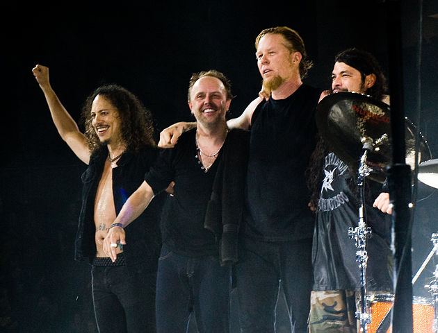
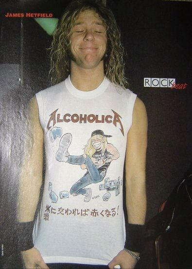

Коротко про гурт
Metallica — американський метал-гурт з Лос-Анджелеса, Каліфорнія, який грає в жанрах треш-метал та геві-метал. Разом з Slayer, Megadeth та Anthrax входять до «великої четвірки треш-металу». Заснований в 1981 році,коли Джеймс Гетфілд відгукнувся на оголошення барабанщика Ларса Ульріха, розміщене у місцевій газеті. Зараз до складу гурту, окрім Гетфілда та Ульріха, входять гітарист Кірк Геммет (який приєднався у 1983) та бас-гітарист Роберт Трухільйо (з 2003 року). Також в різні періоди учасниками гурту були: гітарист Дейв Мастейн (який згодом заснував Megadeth), басисти Рон Макговні, Кліфф Бертон та Джейсон Ньюстед. Гурт також тривалий час співпрацював з БобомРоком, який спродюсував усі їхні альбоми з 1990 до 2003 року,та виконував обов'язки бас-гітариста в період міжвідходом Ньюстеда та приходом Трухільйо.
Гурт отримав прихильників у середовищі андеґраундної музики та схвальні відгуки критиків, випустивши третій студійний альбом Master of Puppets (1986), який зараз вважається «класикою треш-металу» та суттєво вплинув на подальший розвитокцього жанру. Комерційний успіх прийшов після випуску п'ятого альбому (також відомого під назвою The Black Album), який дебютував на першій сходинці чарту Billboard 200. Після випуску цього альбому, подальша творчість гурту відійшла від екстремального стилю і стала більш мейнстримовою.
В 2000 році Metallica був у числі музичних виконавців, які подали позов проти Napster, у зв'язку з безкоштовним поширенням матеріалів, захищених авторським правом, без дозволу авторів. У результаті, було досягнуто домовленості, за якою Napster став платним сервісом. Незважаючи на перше місце в Billboard 200, альбом St. Anger (2003), за винятком гітарних соло та «сталевого звучання» малих барабанів, розчарував багатьох фанатів гурту. У фільмі Some Kind of Monster показано процес створення St. Anger та відносини між учасниками гурту протягом цього часу. В 2009 році Metallica було введено в Залу слави рок-н-ролу.
Гурт отримав дев'ять нагород Греммі, а п'ять їхніх альбомів дебютували на першому рядку чарта Billboard 200, що зробило Metallica першим гуртом, якому це вдалося; цього результату пізніше досягнув, а згодом й перевершив Dave Matthews Band. Альбом Metallica (1991) було продано у кількості понад 15 мільйонів копій у США та 28 мільйонів копій по всьому світу, що зробило його одним з 25-ти найкраще продаваних альбомів у країні. В грудні 2009 року, він став найпродаванішим альбомом ери SoundScan, обігнавши Come On Over кантрі-виконавиці Шанайї Твейн. З випуском останнього альбому Death Magnetic (2008), гурт продав понад 100 мільйонів альбомів у всьому світі. Станом на грудень 2009, Metallica — четвертий найпродаваніший музичний виконавець з початку ери SoundScan, продавши з 25 травня 1991 року більше 52 672 000 альбомів лише в Сполучених Штатах.
В 2012 році Metallica заснували незалежний лейбл Blackened Recordings та викупили права на всі свої студійні альбоми.
Історія гурту
Ранні роки (1981—1983)
Гурт Metallica був заснований в Лос-Анджелесі 28 жовтня 1981 року гітаристом та вокалістом Джеймсом Гетфілдом та барабанщиком Ларсом Ульріхом після того, як обидва помістили оголошення про створення гурту у виданні «The Recycler». Однак, як пізніше з'ясувалося з інтерв'ю Рона Макговні журналу «So What!», Джеймса та Ларса познайомив між собою їх спільний друг Гью Таннер, який в той час був соло-гітаристом у гурті Рона і Джеймса Leather Charm. Дует запросив басиста Рона Макговні, знайомого Гетфілда за його попереднього гурту Leather Charm, проте на ранніх стадіях існування гурту постійно виникали проблеми з гітаристами, тому вже спочатку їх змінилося кілька: Ллойд Грант, Бред Паркер і Джеф Ворнер. Metallica отримала свою назву, коли Рон Куінтана попросив Ларса Ульріха допомогти йому вибрати назву для свого нового журналу про американських та британських хеві-метал гуртів. Куінтана мав такі варіанти як «Metallica», «Metal Mania» і «Hesse». Ульріх збагнув, що «Metallica» буде відмінною назвою для гурту та сказав Рону, що така назву навряд чи кому-небудь сподобається.
На початку 1982 року Ульріх переконав засновника та власника Metal Blade Records Брайана Слейджела включити пісню «Hit The Lights» у першу компіляцію Metal Massacre. Зневірившись у пошуках постійного лідер-гітариста, Ульріх помістив оголошення в журналі The Recycler. Дейв Мастейн з Ганінгтон Біч, який у той час вже грав у гурті Panic, відповів та зустрівся з учасниками Metallica для прослуховування. Ульріх та Хетфілд були так вражені обладнанням та однією лише розминкою Мастейна, що вони попросили його приєднатися до гурту ще до початку самого прослуховування.
В березні та квітні 1982 року було записано кілька демо, включаючи Hit The Lights, для збірки Metal Massacre і так зване демо Power Metal («Hit The Lights», «The Mechanix», «Jump In The Fire», «Motorbreath»). Як згодом пояснив Рон, слова Power Metal в назві демо з'явилися за його ініціативою. Йому видалось цікавим додати ці слова на супровідну візитку до демо-касети, що розсилається на фірми грамзапису, оскільки вказівка всього лише назви гурту та телефону здалося йому вкрай неоригінальним. Кілька місяців потому гурт записав повноформатне демо No Life 'til Leather, яке швидко привернуло увагу незалежних розповсюджувачів, traders, які і допомогли отримати її всім, хто цікавиться, фанам.
Після того як Metallica побачила, як грає гурт Trauma, колектив попросив басиста Кліффа Бертона приєднатися до них, замінивши тим самим менш професійного Макговні. Бертон погодився, але з умовою, що гурт переїде в його рідне місто Сан-Франциско. Вони з радістю прийняли цю пропозицію. В їх рідному Лос-Анджелесі переважно були представники глем-металу, і Metallica не відчувала себе «у своїй тарілці», виступаючи на концертах, в той час як в Сан-Франциско їх приймали, знали пісні та тексти переважно завдяки No Life 'Till Leather. До кінця 1982 року важкий переїзд закінчився і гурт остаточно осів в Сан-Франциско. З Кліффом Бертоном гурт записує Megaforce Demo. Після того як гурт зарекомендував себе важливою одиницею в Bay Area thrash metal, Metallica поїхала в Нью-Йорк в 1983 році.
Kill 'Em All і Ride the Lightning (1983—1984)


В травні 1983 року гурт Metallica поїхав у Рочестер, Нью-Йорк, щоб записати свій дебютний альбом, Metal Up Your Ass, з продюсером Полом Керкіо. 11 квітня 1983 учасники гурту вирішили звільнити Мастейна з гурту через зловживання наркотиками і алкоголем та агресивну поведінку. Того ж дня гітарист Exodus Кірк Геммет замінив Мастейна. Мастейн, який після цього створив гурт Megadeth, висловлював свою неприязнь до Геммета під час інтерв'ю. Він сказав, що Геммет «вкрав мою роботу». Мастейн був розлючений, бо вважав, що Геммет став популярним завдяки гітарним партіям, які написав Дейв. В 1985 році в інтерв'ю з Metal Forces, Мастейн дорікнув Геммету, сказавши: «Це справді кумедно, як Кірк Геммет зірвав усі лід-брейки, які я зіграв в тому записі No Life 'til Leather і став гітаристом № 1 у вашому журналі». В дебютний альбом Megadeth Killing Is My Business... and Business Is Good! (1985), Мастейн включив пісню «Mechanix», яку Metallica переробила, назвала «The Four Horsemen» і додала до альбому Kill 'Em All. Мастейн сказав, що зробив це для того, щоб «підтягнути Metallica», оскільки гурт ставився до Дейва Мастейна, як до алкоголіка і вважав, що той не може грати на гітарі. Перший концерт Metallica з Гемметом відбувся 16 квітня 1983 року в нічному клубі The Showplace у Дуврі, Нью-Джерсі.
Дебютний альбом гурту планували назвати Metal Up Your Ass. Оскільки лейбл і дистриб'ютори відмовилися випускати альбом з такою назвою, її було змінено на Kill 'Em All. Платівка була випущена на лейблі Megaforce Records у США та Music for Nations в Європі. В 1988 році альбом піднявся на 120-ту позицію в чарті Billboard 200. Хоча альбом й не отримав очікуваного фінансового успіху, він забезпечив Metallica перших фанів на андеґраундній метал-сцені. Згодом гурт разом з Raven розпочав Kill 'Em All for One тур в підтримку альбому. В 1989 році журнал Rolling Stone помістив його на 35 місце в списку «100 найкращих альбомів 1980-х». У лютому 1984 року Metallica підтримала Venom під час туру Seven Dates of Hell і виступила на фестивалі Aardschok у Зволле, Нідерланди.
Свій другий студійний альбом Ride the Lightning гурт записував на Sweet Silence Studios в Копенгагені, Данія. Випущений в липні 1984 року, альбом досягнув 100-ї позиції у Billboard 200. Французькі видавці помилково надрукували зелені обкладинки для альбому, які зараз є частиною приватних колекцій. До альбому, зокрема, входили пісні «For Whom the Bell Tolls», «Fade to Black», «Creeping Death» та інструментальна композиція «The Call of Ktulu». Мастейн отримав винагороду за «Ride the Lightning» та «The Call of Ktulu».
Master of Puppets, смерть Кліффа Бертона (1986—1987)

Коли Ride the Lightning притягнув увагу великих звукозаписних компаній, Metallica підписала контракт з Elektra Records. Їх першим релізом з Elektra був Master of Puppets 1986 року, який вважається деякими критиками їх найкращим альбомом. Попри те, що з альбому не було випущено синглів, гурт отримав невеликий радіоефір завдяки пісням Master of Puppets і Welcome Home (Sanitarium). Гурт здобув ще більшу популярність, коли його запросили відкривати концерти Оззі Осборна. Master of Puppets досяг 29 місця в чарті Billboard Top Album Charts. Критики вважають Master of Puppets «одним з найвеличніших хеві-метал-альбомов усіх часів». У ті роки, крім того, гурт значно зловживав алкоголем і з цієї причини багато критиків і шанувальників гурту називали його «Alcoholica».
27 вересня 1986 року, під час європейського турне, Кліфф Бертон загинув в Швеції, коли автобус гурту по дорозі в Стокгольм занесло на слизькій дорозі і він перекинувся. Смерть Кліффа залишила гурт в сумніві, що робити далі. Три учасники Metallica, що залишилися, вирішили, що Бертон побажав би, щоб вони продовжували; з благословення сім'ї Бертона Metallica розпочали пошуки заміни і майже відразу почали прослуховування. Серед претендентів був Лес Клейпул, друг дитинства Кірка Геммета. Клейпул сподобався гуртові, але стиль його гри не підходив для нього. У серії Behind the Music, присвяченій Metallica, Гетфілд пояснює, що Клейпул був «занадто хороший» для Metallica. Кінець кінцем замість Клейпула місце в гурті було запропоноване Джейсону Ньюстеду, колишньому членові гурту Flotsam and Jetsam. Ньюстед офіційно увійшов до складу гурту 28 жовтня 1986 року, через три тижні після похоронів Кліффа Бертона. Гурт закінчив своє турне на початку 1987 року. Услід за турне в липні 1987 року Metallica записала міні-альбом кавер-версій The $5.98 E.P.: Garage Days Re-Revisited з новим басистом.
…And Justice for All (1988—1990)

…And Justice for All, перший студійний альбом, записаний після смерті Кліффа Бертона, був виданий у вересні 1988 року. Альбом мав комерційний успіх, досягнувши 6 рядка в Billboard 200 — це перший альбом гурту, який увійшов в Топ 10 і став платиновим через дев'ять тижнів після релізу. Басова партія Ньюстеда ледве чутна на альбомі. Ньюстед згодом в інтерв'ю говорив, що приглушення басових партій було частиною процесу знущання «новачка» Ньюстеда. Рецензент Allmusic відмітив зростаючу композиторську майстерність і лірику, присвячену занепаду суспільства, але низько оцінив продакшн через те, що ударні Ульріха звучали занадто глухо і гітари мали занадто слабке звучання. За виходом альбому послідував промо-тур Damaged Justice.
Незважаючи на критику в 1989 році Metallica були вперше висунені на Греммі в нещодавно створеній категорії «Найкраще вокальне або інструментальне хард-рок/метал виконання». Проте нагороду отримав гурт Jethro Tull за альбом Crest of a Knave. Це спровокувало багато суперечок, оскільки Metallica були очікуваним переможцем і залишилося чекати отримання нагороди за виконання пісні «One» для телеефіру. Jethro Tull (яку більшість навіть не рахувала хард-рок/метал гуртом) навіть не стежили за церемонією, вважаючи, що їх шанси отримати нагороду занадто малі. Через три роки на церемонії вручення Греммі за «Enter Sandman» Ларс Ульріх іронічно відізвався про Jethro Tull, сказавши: «Ми повинні дякувати Jethro Tull за те, що вони не випустили альбом цього року».
Услід за випуском …And Justice for All Metallica випустила дебютний кліп на пісню «One». Гурт виконував пісню на покинутому складі, також в кліпі були уривки з фільму Джонні узяв рушницю. Замість організації майбутньої угоди з власниками ліцензії Metallica просто повністю купили права на фільм. Кінцевий результат був послідовною, але укороченою «міні-версією» фільму з хитромудрою синхронізацією між піснею і діалогами фільму. В 1999 році відеокліп на пісню посів 38 місце в списку «100 найкращих відеокліпів всіх часів», складеному MTV.
Metallica (1991—1992)

У 1991 році Metallica випустила альбом без назви (також відомий прихильникам як Metallica або The Black Album). Співродюсером альбому був Боб Рок, який також працював з The Cult, Bon Jovi і Motley Crue. Обкладинка альбому була чорною з дуже блідим зображенням змії в правому нижньому кутку і логотипом гурту в протилежному. Робота в студії зайняла шість місяців, а увесь процес випуску альбому, за словами музичного критика Яна Крісті, коштував мільйон доларів і зруйнував три подружжя. Альбом стартував на першій позиції в Billboard 200 і залишався на вершині чотири тижні. Альбом зайняв 16 місце у списку «100 найкращих альбомів 1990-х» за версією журналу Rolling Stone, а також увійшов до списку «500 найкращих альбомів усіх часів».
Першим синглом з альбому був «Enter Sandman», який показав понижений темп нового альбому в порівнянні з попередніми роботами Metallica. Black Album став найуспішнішою роботою гурту, за станом на 2010 рік: він був проданий накладом в 15 мільйонів копій і входить в сотню найпродаваніших альбомів США усіх часів. В той же час відхід від треш-метал звучання і робота з мейнстрім-продюсером Бобом Роком дали привід багатьом фанатам критикувати гурт за те, що він, на їх думку, зробив величезний крок у бік комерціалізації своєї музики. Одним з найуспішніших синглів і постійним концертних номерів стала балада «Nothing Else Matters», яка по духу і структурі не була властива гурту і його попереднім роботам.
20 квітня 1992 року Metallica з'явилася на концерті пам'яті Фреді Мерк'юрі, виконавши три пісні. Гетфілд пізніше виконав «Stone Cold Crazy» з іншими членами Queen і Тоні Айоммі. 8 серпня 1992 року, в час дуже фінансово успішного туру разом з Guns N' Roses Хетфілд отримав опіки другої і третьої міри лівої руки через піротехнічні ефекти під час вступу пісні «Fade To Black», які привели до того, що він не міг грати на гітарі частину турне. Піротехніки встановили нові піротехнічні ефекти, але забули попередити, що під час виконання пісні будуть використані і старі. Джеймс, будучи не в курсі цього, встав на місце, звідки повинен був вирватися стовп вогню, і отримав опіки. Гітарист Metal Church Джон Маршал (що був супроводжуючим Metallica) грав на гітарі частину турне, що залишилася, а Гетфілд продовжував співати. Перший бокс-сет гурту був випущений в листопаді 1993 року під назвою Live Shit: Binge & Purge. Колекція містила три концертні компакт-диски, три домашніх відео і книги, заповнені райдерами та листами.
Load, ReLoad, Garage Inc. і S&M (1994—1999)


Майже після трьох років гастролей на підтримку Metallica, включаючи виступ на Вудстоку '94, Metallica повернулися в студію, щоб написати і запис свій шостий студійний альбом. Гурт пішов на коротку паузу влітку 1994 року і грав три шоу, які включали Парк Донингтона в Великій Британії, підтримане Slayer, Skid Row, Slash's Snakepit, Therapy? і Corrosion of Conformity. Короткий тур був названий Escape from the Studio '95. Гурт провів приблизно один рік, пишучи і роблячи запис нових пісень, приводячи до випуску Load у 1996 році, який дебютував на першій позиції в Billboard 200 і ARIA Charts, відзначаючи другу першу позицію гурту. Обкладинку Load створив Андрес Серрано і назвав Кров і Сперма III. Серрано використав суміш своєї власної сперми і бичачу кров між листами органічного скла[58]. Реліз зазначив кілька змін в музичному напрямку гурту і нового іміджу учасників. Metallica були хедлайнерами на фестивалі альтернативного року Lollapalooza влітку 1996 року.
Під час раннього виробництва альбому гурт написав достатньо матеріалу для подвійного альбому. Було вирішено, щоб половина пісень повинна була бути випущена, і гурт продовжить працювати над рештою піснями і виступив їх у наступному році. Це призвело до подальшого альбому, ReLoad. Обкладинку було створено Серрано, цього разу використовуючи суміш крові і сечі. Reload дебютував номер один на Billboard 200 і досяг два номери на Головному канадському Хіт-параді альбомів. Гетфілд зазначив у фільмі документального фільму 2004 року «Some Kind of Monster», що деякі пісні на цих альбомах, як спочатку думала гурт, мали середню якість, і «полірувалися і перероблялися» поки не оцінено, щоб бути випущеними. Щоб просунути ReLoad, Metallica, виконані у Saturday Night Live NBC в грудні 1997 року, виконуючи «Fuel» і «The Memory Remains» з Маріанною Фейтфул.
Конфлікт з «Напстером» (2000)
В січні 2000 року Metallica записує пісню «I Disappear» для фільму Місія нездійсненна 2. Незабаром гурт виявив, що демозапис «I Disappear» вільно поширюється (як і всі інші їхні пісні) в інтернеті завдяки компанії Napster. Metallica подала позов до окружного суду США, Центрального округу Каліфорнії, стверджуючи, що Napster, порушила три області законодавства: порушення авторських прав, незаконне використання цифрових аудіоінтерфейсів. Врегулювання між Metallica і Napster було досягнуто коли німецький медіа-конгломерат Bertelsmann BMG показав зацікавленість у придбанні прав на Napster за $94 млн.
Ньюстед покидає гурт, St. Anger (2001—2005)

17 січня 2001 року Ньюстед залишає гурт через, як він сказав, «фізичну шкоду, яку він наніс собі за роки гри музики, яку він любить». Проте з подальших інтерв'ю з Ньюстедом і учасниками Metallica, що залишилися, стало відомо, що бажання Ньюстеда випустити запис свого проекту Echobrain і відправитися з ним в турне і наполегливий опір цьому Гетфілда стали головними причинами відходу басиста з гурту. Також інтерв'ю журналу Playboy розкрило той факт, що жартування над Ньюстедом як над новачком, що почалися з моменту його приходу в гурт, не припинилися з часом.
В липні 2001 року Гетфілду довелося пройти курс реабілітації в зв'язку з «алкоголізмом і іншими шкідливими звичками». Близько року Metallica не робила нічого важливого. Ларс Ульріх і Кірк Геммет перший час серйозно вважали, що з гуртом може бути все кінчено. В грудні Джеймс повернувся в гурт, але працював лише по чотири години в день, решту часу проводив зі своєю сім'єю. Повільно Metallica вигадувала і записувала матеріал для свого нового альбому. Боб Рок виконував партії бас-гітари. Створення альбому було документоване у фільмі Some Kind of Monster.
Після запису нового альбому Metallica проводила прослуховування для постійної заміни Ньюстеда на початку 2003 року. Роберт Трухильйо, колишній член гуртів Suicidal Tendencies і Ozzy Osbourne, був вибраний як новий басист Metallica. Резюме Роберта включало також Infectious Grooves і роботу з Black Label Society на їх DVD Boozed, Broozed, and Broken — Boned. Оскільки Metallica продовжила своє існування, Джейсон Ньюстед також знайшов собі музичний притулок в легендарному канадському треш-метал гурті Voivod в 2002 році. Також варто відмітити той цікавий факт, що Джейсон став заміною Роберта Трухільйо в гурті Ozzy Osbourne упродовж турне Ozzfest в 2003 року (у цьому турне також брала участь гурт Voivod).
В червні 2003 року вийшов восьмий студійний альбом Metallica St. Anger, який зайняв перші рейтинги в чартах. Будучи навмисно «сирим» та невідшліфованим альбомом, St. Anger був суворо розкритикований фанатами. «Сире» звучання запису, «гнучкість» висоти вокалу Гетфілда, «металева» підзвучка ударних Ульріха та повна відсутність гітарних соло отримали окрему критику. Незважаючи на все це, пісня «St. Anger» отримала Греммі за «Найкраще метал виконання» в 2004 році.
Death Magnetic, Lulu і Beyond Magnetic (2006—2011)


У грудні 2006 року Metallica видає DVD під назвою The Videos 1989—2004, який продав 28 000 копій в перший тиждень і досяг 3 рядку в чарті Billboard Top Videos. Metallica записала гітари на основі інтерпретації Енніо Морріконе «The Ecstasy золото» для триб'ют-альбому Ми всі любимо Енніо Морріконе, який був випущений в лютому 2007 року трек отримав номінацію Греммі на 50-й премії Греммі в категорії «Найкращий Рок Інструментальна Performance». 16 лютого 2006 Metallica на своєму офіційному сайті оголосила, що продюсер Боб Рок, який продюсував усі альбоми з 1991 року, не братиме участі в записи наступного альбому. Новим продюсером був вибраний Рік Рубін, що раніше працював з групами Linkin Park, Danzig, Slipknot, Slayer, Red Hot Chili Peppers і System of a Down. Вихід дев'ятого студійного альбому Metallica був призначений на 12 вересня 2008 року.
6 червня 2006 у Берліні у рамках туру «Escape from the Studio '06» група зіграла нову пісню, тимчасово названу «The New Song». 12 серпня 2006 в Токіо у рамках Азійської гілки турне Metallica продемонструвала ще одну нову пісню, названу «The Other New Song». Якщо друга з них багато в чому не відповідала стилю групи, то фрагменти першої, названої фанатами «Death Is Not the End» зважаючи на часте повторення цієї фрази упродовж пісні, знайшли своє застосування в новому альбомі (а саме в композиції «The End of the Line»).
12 березня 2007 року Metallica почала безпосередньо запис нового студійного альбому. Також було анонсовано літнє турне (пізніше назване «Sick of the Studio '07»). 2 вересня 2008 року (за десять днів до офіційно призначеної дати) в одному французькому музичному магазині почалися продажі альбому Death Magnetic, дев'ятої по рахунку повноформатної студійної роботи Metallica[70]. Це привело до появи нових пісень в доступному для скачування виді в P2P-мережах. Зважаючи на це офіційний дистриб'ютор Metallica на території Великої Британії, Vertigo Records, вимушений був змістити дату виходу Death Magnetic на два дні назад. дебютував на першому рядку чартів у багатьох країнах, у тому числі в Австралії, Канаді і Мексиці, а також в європейському чарті альбомів. У США було продано 490 000 копій платівки. Крім того, Metallica стала першою групою, яка випустила п'ять альбомів, що йдуть підряд і займають перше місце в Billboard 200. Через тиждень після релізу, Death Magnetic утримував перше місце в Billboard 200, європейському чарті альбомів, а також став альбомом, що найшвидше продавався, в Австралії в 2008 році. Навіть після трьох тижнів Death Magnetic все ще лідирував в чарті Billboard 200. Таке досягнення в 2008 році було на рахунку тільки у Metallica і Джека Джонсона. А в чартах Billboard «Hard Rock», «Modern Rock/Alternative» і «Rock» альбом залишався на першій позиції цілих п'ять тижнів підряд.
Альбом Death Magnetic отримав широке визнання публіки і позитивні відгуки критиків. Death Magnetic є успішним альбомом групи і відродженням колишнього звучання, яке було присутнім в ранній творчості до періоду The Black Album. В цілому Death Magnetic займав перші рядки хіт-парадів в 32 країнах світу. Ввиду успіху дев'ятого альбому Metallica MTV Europe номінувало групу на свою премію Music Awards в категоріях «Rock Out» і «Headliner», а MTV Latin America запросило музикантів виступити на їх церемонії Music Awards. Metallica зіграла композицію «The Day That Never Comes». У листопаді 2008 збіг термін дії контракту групи з Warner Bros., і Metallica зараз розглядає різні плани на майбутнє, включаючи (згідно з Ларсом Ульріхом) можливість випуску наступного альбому через інтернет.
15 червня 2011 року на офіційному сайті Metallica з'явилася інформація про новий матеріал, що раніше називається «секретним проектом». Цей проект включає 10 пісень, записаних за участю Лу Ріда[76]. Запис був здійснений в домашній студії штаб-квартири Metallica; звукозаписні сесії тривали декілька останніх місяців і закінчилися напередодні 15 червня. 22 серпня було оголошено, що спільний альбом музикантів буде випущений 1-го листопада в Північній Америці і на один день раніше (31 жовтня) в іншій частині світу. Спільна пластинка американських музикантів дістала назву «Lulu» і була натхненна п'єсами німецького поета-експресіоніста Франка Ведекінда «Дух землі» і «Скринька Пандори». Лу Рід написав пісні і музику для театральної постановки «Лулу» за мотивами Ведекинда, але після спільного виступу з Metallica на честь 25-річчя Залу слави рок-н-ролу музиканти вирішили записати альбом[78]. 16 жовтня 2011 року Роберт Трухільйо підтвердив, що гурт повернулася в студію і вже пише новий матеріал. Також Роберт помітив, що гурт вже працює з Ріком Рубіном над парою нових пісень і збирається записувати новий матеріал упродовж більшої частини наступного року.
Hardwired…To Self-Destruct (2016) and 72 Seasons(2023)


18 серпня 2016 року на офіційному сайті гурту було оголошено про вихід нового студійного альбому Hardwired ... To Self-Destruct 18 листопада 2016. Пізніше Metallica випустила перший сингл — «Hardwired», а також опублікувала відеокліп на цю пісню,обкладинку альбому і його трек-лист. Сингли «Moth Into Flame» і «Atlas, Rise!» Вийшли 26 вересня і 31 жовтня відповідно. 16 листопада на YouTube-каналі групи почали з'являтися кліпи до ще не опублікованих пісень з альбому в наступному порядку: «Dream No More», «Confusion», «ManUNkind», «Now That We're Dead», «Here Comes Revenge», «Am I Savage?», «Halo On Fire», «Murder One», «Spit Out The Bone», останнім вийшло відео на трек з третього диска делюкс-видання альбому — «Lords of Summer». Таким чином, весь альбом офіційно потрапив у вільний доступ ще за кілька годин до виходу. 18 листопада альбом дебютував на першому рядку Billboard 200 з 282 000 проданих копій за перший тиждень. Згодом альбом очолив чарти в 57 країнах світу. Пісня «Hardwired» була номінована на премію Греммі в номінації «Краща рок-пісня».
На 2019 рік загальний тираж альбомів Metallica перевищив 100 мільйонів екземплярів. Наприкінці вересня 2019 року Metallica скасувала концерти 17—29 жовтня в Австралії та наступні — в Новій Зеландії — через те, що вокаліст Джеймс Гетфілд опинився в лікарні, адже був змушений знову розпочати курс лікування від алкогольної залежності. Музиканти вибачилися в твіттері та пообіцяли повернути гроші за куплені квитки.[85]. У травні 2020 року, перебуваючи на карантині, Metallica виконала віртуальну акустичну версію пісні «Blackened» під назвою «Blackened 2020», яка пізніше була доступна для завантаження. 10 серпня 2020 року Metallica зіграла шоу на виноробні Gundlach-Bundschu у Сономі, штат Каліфорнія , на якому були присутні лише кілька членів знімальної групи, а 29 серпня воно було записано та відтворено для автомобільних фільмів у США та Канаді. 28 листопада 2022 року гурт випустив сингл «Lux Æterna», анонсуючи свій одинадцятий студійний альбом «72 Seasons», реліз якого запланований на 14 квітня 2023 року.Вже відбувся.
Активізм
Під час повномасштабного російського вторгнення в Україну, яке є частиною російсько-української війни гурт Metallica пожертвував 500 тис. доларів українським переселенцям. «Те, що шеф-кухар Хосе Андрес та інші віддані кухарі World Central Kitchen, роблять на передовій гуманітарної кризи, просто неймовірно», — заявив барабанщик гурту Ларс Ульріх.